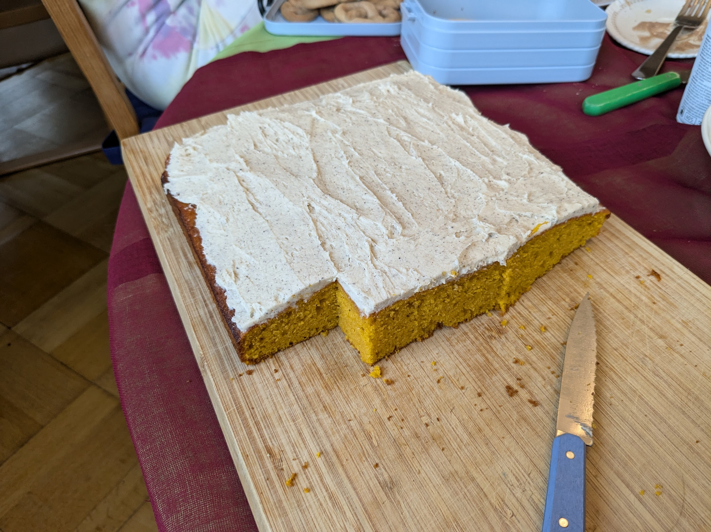

Gâteau moelleux au potiron

Ici avec un glaçage au beurre noisette
Pour facilement 12-15 personnes :
- 600g de courge (ou un peu plus), par exemple doubeurre ou spaghetti
- 4 œufs
- 150g de sucre
- 200g d'huile neutre (par exemple, tournesol ou colza)
- 25g d'huile d'olive
- 250g de farine
- 20g de levure chimique
- Une cuillère à café de cannelle moulue
- Une cuillère à café de mixed spice, ou bien de mélange d'épices pour pain d'épices ou pour spéculoos
- Une petite cuillère à café de sel
- Faire préchauffer le four à 180°C. Éplucher la courge, la couper en gros morceaux, et l'enfourner 45 minutes environ, jusqu'à ce qu'une fourchette y rentre sans résistance. Le temps de cuisson exact n'a pas beaucoup d'importance.
- Laisser refroidir un peu la courge, puis la mixer pour en faire une purée la plus lisse possible. Si besoin, laisser refroidir un peu plus, on doit pouvoir toucher la purée du doigt sans se brûler. On peut aussi faire tout ça la veille et conserver la purée au frigo.
- Si on a éteint le four entre temps, le refaire préchauffer à 180°C. Beurrer un gros moule à gâteau en métal (disons, de 25×30cm environ) et tapisser au moins le dessous de papier sulfurisé.
- Battre dans un saladier, dans cet ordre, les huiles, le sucre, les œufs, puis la purée de courge.
- Mélanger dans un petit bol la farine, la levure, la cannelle et le sel. L'ajouter dans le saladier, mélanger doucement jusqu'à ce qu'on ne voit plus de farine (pas plus longtemps).
- Disposer dans le plat à four et enfourner 30-40 minutes, jusqu'à ce qu'un cure-dents ressorte sec.
- Laisser refroidir entièrement. Le glacer par exemple avec un glaçage au beurre noisette avant de le servir.
Remarque : lors de la première étape, on peut aussi faire cuire la courge à la vapeur, ou la faire cuire avec la peau puis enlever la peau après la cuisson, c'est comme on veut.
Remarque 2 : si on ne veut pas le glacer, alors mieux vaut augmenter un peu la quantité de sucre.